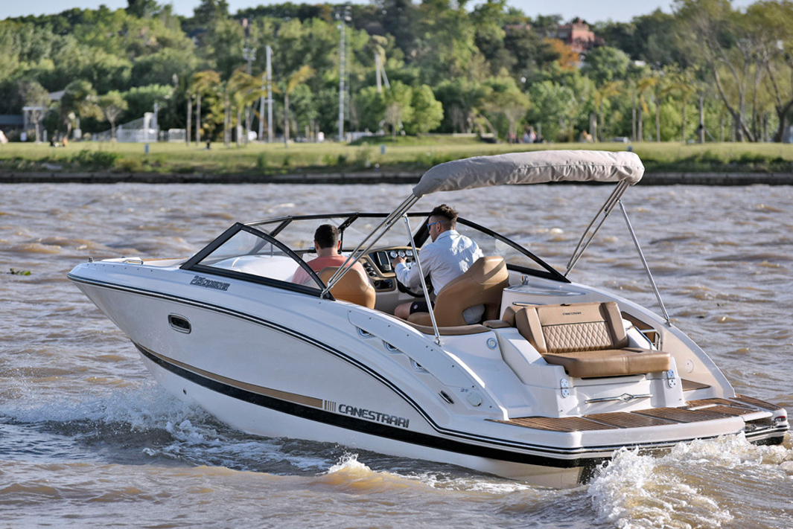

Tu embarcación ideal esta aqui
Para poder encontrar la embarcación que más se ajuste a tus necesidades deberás realizarte varias preguntas y tener bien en claro las respuestas a estas mismas:
¿Qué uso le voy a dar? ¿Cuantas personas voy a trasladar? ¿Con qué voy a transportarla?
Embarcaciones de uso familiar o deportivo
Son embarcaciones diseñadas para el ocio y el entretenimiento en el agua. Tienen asientos abiertos en la proa con capacidad para varias personas. Es muy habitual que tengan un espacio cómodo para pasajeros, suelen ser fáciles de manejar, ideales para paseos familiares o con amigos. Están diseñadas para navegar en paseos cortos por ríos, lagos o aguas costeras. Entre sus aspectos más destacables, cabe mencionar su alta velocidad, capacidad de maniobrabilidad, aerodinámica. Generalmente, son el tipo de embarcación ideal para practicar deportes acuáticos y actividades recreativas, como es el caso del esquí acuático, aunque también pueden usarse en competiciones de velocidad.
Embarcaciones para pesca o traslado
En la Argentina se conoce a este tipo de embarcacion como trucker, en referencia a lanchas para carga y trabajo, son naves abiertas y de francobordo medio con lanzamiento de mayor altura en proa. En general, este tipo de embarcación se utiliza para la pesca deportiva debido a su gran comodidad, ya que son abiertas y con consolas centrales o, en los modelos más chicos, sin consola y con manejo por medio de caña del motor. La particularidad que tienen es su bajo consumo debido a que utiliza baja potencia para planear porque tiene fondo plano.